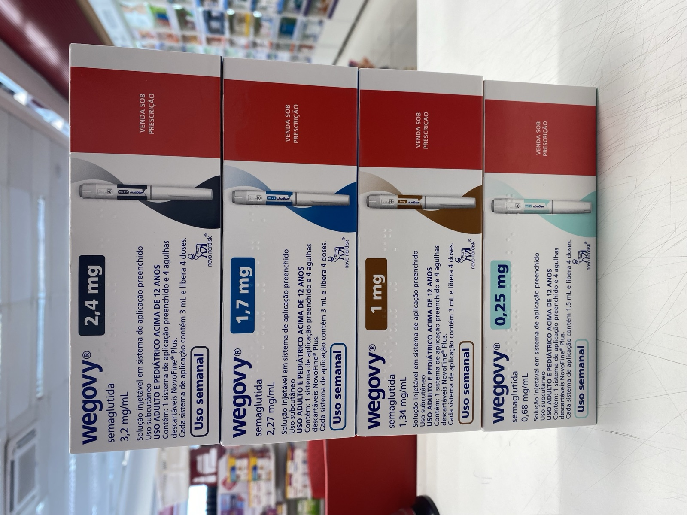

CagriSema vs. Tirzepatide: What the New Diabetes Trial Actually Shows
SCIENCE & TECHNOLOGY · SEPTEMBER 22, 2026

On September 21, 2026, Novo Nordisk announced that its experimental drug CagriSema outperformed Eli Lilly's tirzepatide on weight loss in a late-stage trial of patients with type 2 diabetes. That's true, and the company has the data to show it. It's also not the whole story: the same afternoon, Novo released results from a second head-to-head trial, against a higher dose of the same Lilly drug, and lost. Both trials measured something real. Neither one settles the question "which drug is better" as cleanly as a single press release headline suggests.
What REIMAGINE 5 Actually Tested
REIMAGINE 5 enrolled about 1,000 adults with type 2 diabetes whose blood sugar wasn't adequately controlled on metformin, an SGLT2 inhibitor, or both — people already on treatment and still not where their doctors wanted them. Over 60 weeks, the trial compared once-weekly CagriSema at its top dose, 1.0mg/1.0mg, against once-weekly tirzepatide at 5mg. The two things it measured were the two things that matter most for a diabetes drug: how much A1C (a measure of average blood sugar) came down, and how much weight came off, since excess weight is itself a driver of insulin resistance in type 2 diabetes.
The Numbers
CagriSema produced an estimated 12.4% average weight loss, against 9.1% for tirzepatide — a real, clinically meaningful gap of about 3.3 percentage points. On blood sugar, the two drugs were statistically indistinguishable: CagriSema brought A1C down by 1.71 percentage points, tirzepatide by 1.67, a difference small enough that Novo's own framing calls it "non-inferior" rather than superior. So the honest one-line summary is narrower than "CagriSema wins": at these specific doses, the two drugs controlled blood sugar about equally well, and CagriSema produced more weight loss.
Two Molecules, Two Different Bets
CagriSema isn't a new version of an old drug — it's two drugs in one weekly injection, built on different biology than tirzepatide entirely. One component, semaglutide, is the same active ingredient already sold as Ozempic (for diabetes) and Wegovy (for weight loss) — a GLP-1 receptor agonist, mimicking a gut hormone that signals fullness and slows digestion. The other, cagrilintide, is new: an amylin analog, activating receptors for a different hormone your pancreas releases alongside insulin, one that also acts on appetite and, per Novo, on calcitonin receptors as well. The bet is that hitting two separate appetite-and-metabolism pathways at once outperforms hitting either one alone.
Tirzepatide — sold as Mounjaro for diabetes and Zepbound for weight management — takes a different architectural approach to the same problem: instead of two separate molecules, it's a single molecule engineered to activate two different receptors itself, GLP-1 and GIP (glucose-dependent insulinotropic polypeptide), the latter a gut hormone GLP-1 drugs alone don't touch. Both companies are chasing the same idea — that combining hormone pathways beats semaglutide alone — by genuinely different engineering routes, and REIMAGINE 5 is one data point on whether Novo's two-molecule combination or Lilly's single dual-acting molecule does it better.
The Trial Novo Didn't Lead With
Buried in the same September 21 release was REDEFINE 9, a separate 809-person, 84-week trial in adults with obesity or overweight rather than diabetes — and it ran the comparison Novo's headline skipped. Here, CagriSema went up against tirzepatide's highest approved dose, 15mg, not the 5mg used in REIMAGINE 5. CagriSema delivered 23% average weight loss. Tirzepatide delivered 25.5%. CagriSema didn't just fail to win this one — it failed to even clear the bar of "non-inferior" that REIMAGINE 5 cleared comfortably on blood sugar.
Put the two trials side by side and the pattern is dose, not drug. Against a below-maximum tirzepatide dose, in diabetes patients, CagriSema pulled ahead on weight. Against tirzepatide's ceiling dose, in a general weight-loss population, tirzepatide pulled ahead. Nothing here means Novo's release was dishonest — REIMAGINE 5's design and its comparator dose were both specified in the trial registration well before results came in, this wasn't an after-the-fact cherry-pick of which numbers to compute. But a reader taking away "CagriSema beats tirzepatide" from a single headline is taking away more certainty than the combined evidence supports.
Why the Stock Fell Anyway
If REIMAGINE 5 was a win, the market didn't treat it as a big one. Novo Nordisk shares fell roughly 7% the same day the results came out — not because of this trial data, by most reporting, but because the release landed alongside a separate investor-day presentation where CEO Mike Doustdar laid out Novo's broader post-Wegovy growth plan, including new sales targets, and investors weren't satisfied it was enough of a turnaround after Novo had already ceded its lead in the obesity-drug market to Lilly over the past two years. Eli Lilly shares barely moved, down about 0.7% — closer to a shrug than a reaction to a rival's drug beating its own.
That's a useful reminder on its own: a genuinely positive clinical readout and a genuinely bad day for the stock can be the same headline for two completely different reasons, decided by two different audiences reading two different parts of the same press release.
Where I Could Be Wrong
- These are Novo's own topline, company-reported figures. Full trial data hasn't been presented at a medical conference or published in a peer-reviewed journal at the time of writing, and neither trial has been reviewed by the FDA or any other regulator. Numbers in a full data readout have moved from a topline announcement before, in this drug class and others — that's not a prediction it will happen here, just a reason to treat these as early, not final.
- CagriSema is not an approved drug. Nothing in this entry should be read as guidance about what any specific patient should take — that's a decision between a patient and their doctor, based on data these two trials alone don't fully provide.
- The dose comparison in REIMAGINE 5 was pre-specified, not a post-hoc pick — but pre-specified and representative aren't the same thing. Readers drawing conclusions about "which drug is stronger" should weigh both trials described here, not just the one Novo's headline led with.
- I'm not a doctor, and figures like weight-loss percentage and A1C reduction don't capture everything relevant to choosing a treatment — side-effect profile, cost, insurance coverage, and individual response all matter and aren't covered here.
Sources
- Novo Nordisk. Novo's CagriSema delivers superior weight loss versus tirzepatide in REIMAGINE 5 trial. Company announcement, September 21, 2026. novonordisk.com
- GlobeNewswire (Novo Nordisk release). Novo's CagriSema delivers superior weight loss versus tirzepatide in REIMAGINE 5 trial. September 21, 2026. globenewswire.com
- Healio. CagriSema bests tirzepatide for weight loss in adults with type 2 diabetes. September 21, 2026. healio.com
- PharmExec. CagriSema Tops Eli Lilly's Tirzepatide for Weight Loss in Late-Stage Diabetes Trial: Report. pharmexec.com
- Clinical Trials Arena. Novo Nordisk's CagriSema bested by Lilly's Zepbound in head-to-head trial. (REDEFINE 9 obesity-trial result against tirzepatide 15mg.) clinicaltrialsarena.com
- 24/7 Wall St. Novo Nordisk Falls 7% as Post-Wegovy Growth Plan Fails to Ease Competition Fears; Eli Lilly Slips, Viking Therapeutics Edges Higher. September 21, 2026. 247wallst.com
- AllSci. Novo's CagriSema beats lower-dose tirzepatide in diabetes, meets obesity endpoint. allsci.com
- Wikipedia. Cagrilintide/semaglutide. (Mechanism background for CagriSema's two components.) en.wikipedia.org